取名 Agent
去体验产品取名 Agent 是一款面向中文取名场景的移动端对话式产品
用户只需用自然语言描述需求，系统即可识别取名类型、提取关键信息、补齐缺失条件，并调用对应的专业 Skill，输出结构化的名字、五行分析或名字解析结果。
它不是让大模型自由生成名字，而是通过场景识别、专业数据、规则校验与模型增强，建立一套可控、可复用、可持续优化的垂直Agent。
取名 Agent 是一款面向中文取名场景的移动端对话式产品
用户只需用自然语言描述需求，系统即可识别取名类型、提取关键信息、补齐缺失条件，并调用对应的专业 Skill，输出结构化的名字、五行分析或名字解析结果。
它不是让大模型自由生成名字，而是通过场景识别、专业数据、规则校验与模型增强，建立一套可控、可复用、可持续优化的垂直Agent。
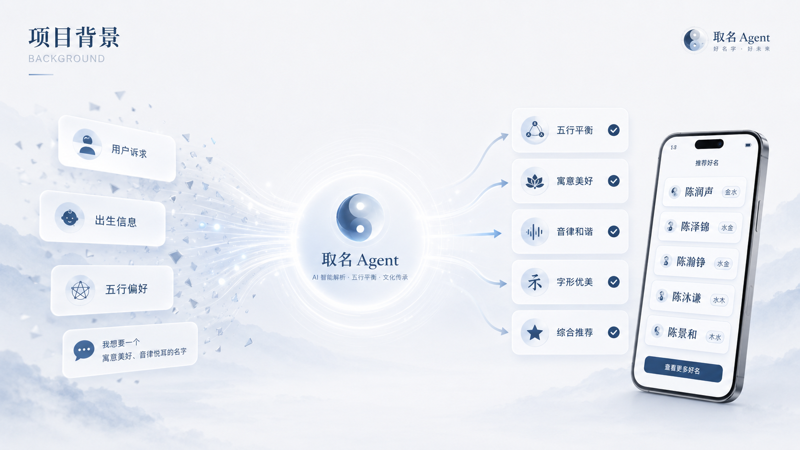
01 / 项目背景
新手父母为了给宝宝取一个满意的名字，往往需要花费大量时间查资料、翻字典、找典故。如今的取名需求也越来越个性化，不仅要避免网红名，还要兼顾诗词出处、父母姓氏结合、手足关联、字义联动与五行适配等。
但通用大模型在五行判断、用字搭配和文化语境上仍不够稳定；传统线上取名服务则存在质量参差、价格较高、专业性难验证等问题。
取名 Agent 通过名字库、五行属性字库、场景化 Skill、规则校验与大模型协同，为用户提供更专业、可解释、可筛选的取名方案，帮助新手父母降低决策成本，更高效地找到兼具文化内涵与现代审美的好名字。
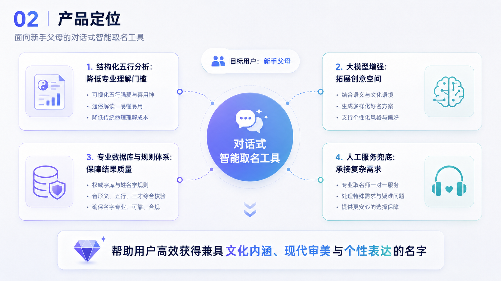
02 / 产品定位
取名Agent 是一款面向新手父母的对话式智能取名工具，通过结构化五行分析降低专业知识的理解门槛，以大模型拓展取名的创意空间，以专业数据库与规则体系保障结果质量，并由人工服务兜底，帮助用户更高效地获得兼具文化内涵、现代审美与个性表达的名字。
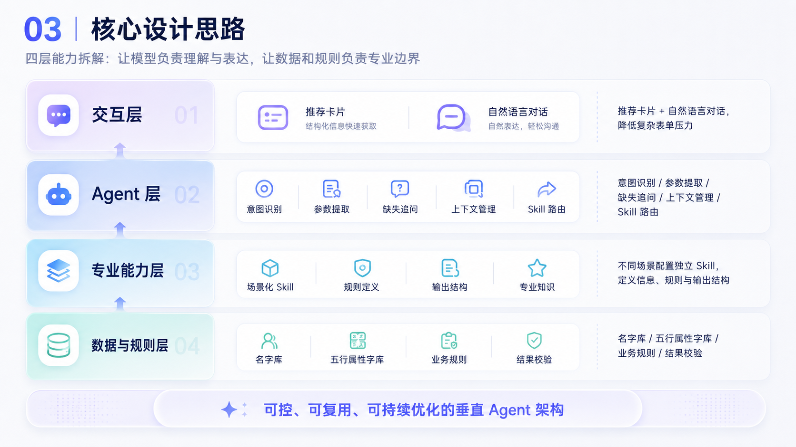
03 / 核心设计思路
取名 Agent 将系统能力拆分为四层：
通过推荐卡片与自然语言对话接收需求，减少复杂表单带来的使用压力。
负责意图识别、参数提取、缺失信息追问、上下文管理和 Skill 路由。
针对不同取名场景配置独立 Skill，分别定义所需信息、数据来源、生成规则与输出结构。
通过名字库、五行属性字库、业务规则和结果校验，约束模型输出，保证结果可控。
这一设计让模型负责理解与表达，让数据和规则负责专业边界。
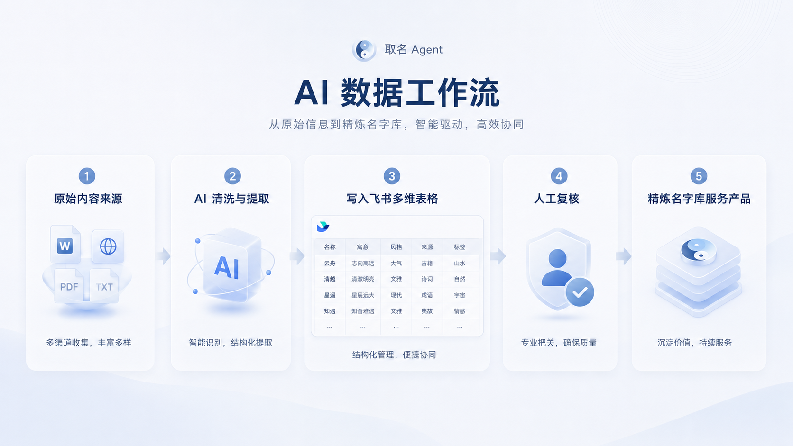
04 / AI 数据工作流
取名 Agent 建立了一套从原始内容到专业名字库的数据生产流程。
数据来自内容运营、用户留言、历史取名方案及五行属性字表。
大模型从非结构化文本中识别有效名字，并提取；同时完成去重、格式统一和无效内容过滤。
清洗后的数据写入飞书数据库，用于筛选、标注、评分和人工复核。
飞书多维表格既是名字数据仓库，也是内容运营与质量管理后台。
通过人工检查字义、来源和审美质量，确认后的数据再同步为 Agent 可调用的名字库。
最终形成：
原始内容 → AI 清洗 → 结构化字段 → 飞书入库 → 人工复核 → Agent 调用
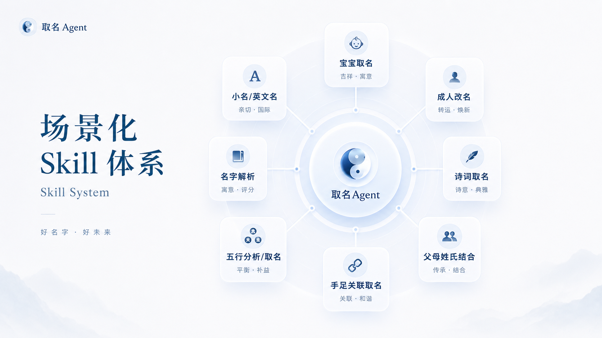
05 / 场景化 Skill 体系
系统没有使用一个超长 Prompt 覆盖所有任务，而是按照用户真实需求拆分为独立 Skill。
| Skill | 核心规则 |
|---|---|
| 宝宝取名 | 根据姓氏、性别、音形意和风格生成候选 |
| 成人改名 | 结合原名、改名原因与个人气质提供方案 |
| 诗词取名 | 校验诗词出处、语境与名字整体意象 |
| 父母姓氏结合 | 通过谐音、近音或字义关系融入母姓 |
| 手足关联取名 | 提取共用字，保持系列感并避免过度相似 |
| 五行分析与取名 | 区分“只分析”与“按喜用神取名”两种任务 |
| 名字解析 | 从音、形、意、雅和五行风险进行分析 |
| 小名与英文名 | 关注亲昵感、发音、气质与中文名关联 |
Skill 化设计可以减少规则冲突，并支持独立测试、快速调整和持续扩展。
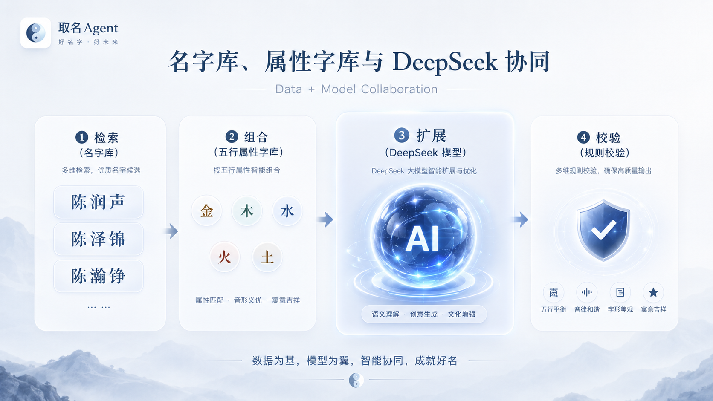
06 / 名字库、属性字库与 DeepSeek 的协同
取名结果由三类能力共同完成。
保存经过清洗和人工筛选的优质名字案例，包括寓意、性别、五行、风格、来源、适用场景和风险标签。
分别维护金、木、水、火、土属性用字。当用户指定喜用神时，系统先限定可用汉字，再进行组合与语义判断。
主要负责：
这种方式让专业数据保证取名效果，让大模型提升组合空间与表达质量。
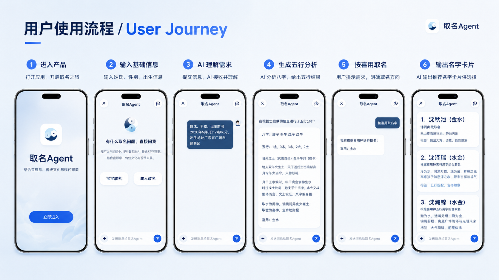
07 / 用户使用流程
用户可以选择推荐场景，也可以直接输入自然语言，例如：
姓江，女孩，希望名字有自然意境，简单大方，不要网红感。
系统判断用户属于普通取名、诗词取名、五行分析或其他场景，并提取姓氏、性别、生辰、喜用神、父母姓氏、手足名字和风格偏好等信息。
当信息不足时，Agent 根据当前 Skill 继续追问，而不是直接猜测。
系统加载对应规则，检索名字库或属性字库，必要时调用 DeepSeek 扩展候选。
系统检查结果是否满足五行、共用字、母姓近音、避讳、去重和额度规则，再输出统一的名字卡片。
用户可以继续生成、放宽限制、按喜用神取名、查看历史记录或联系人工定制。
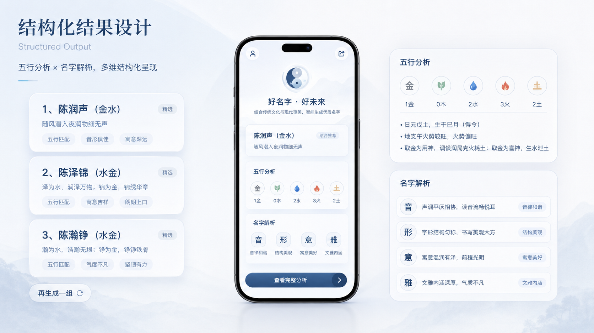
08 / 结构化结果设计
取名 Agent 不直接展示大段模型文本，而是将结果统一转换为结构化数据。
每张名字卡片包含：
五行分析包含八字、五行数量、整体判断、用神、喜神和喜用元素。
名字解析包含音、形、意、雅、名字五行、适配风险和综合建议。
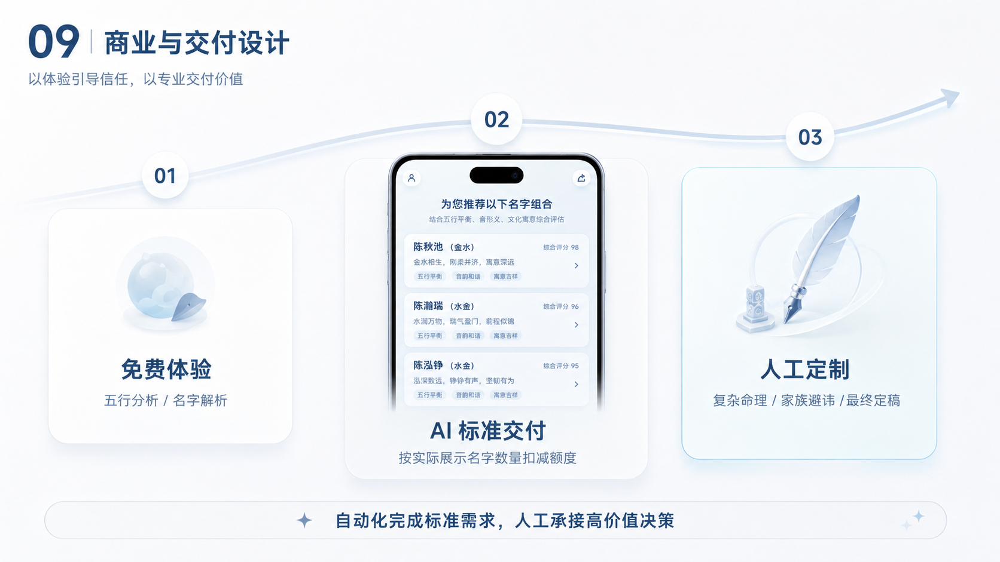
09 / 商业与交付设计
产品将服务分为三层：
五行分析、名字解析、小名推荐和英文名推荐，用于降低首次体验门槛。
正式中文取名按照实际展示的名字数量扣减额度，而不是按对话次数收费。
复杂命理、家族避讳、人工复核和最终定稿，由一对一服务承接。
这种分层既能控制低价商品的交付成本，也为高价值服务保留转化路径。
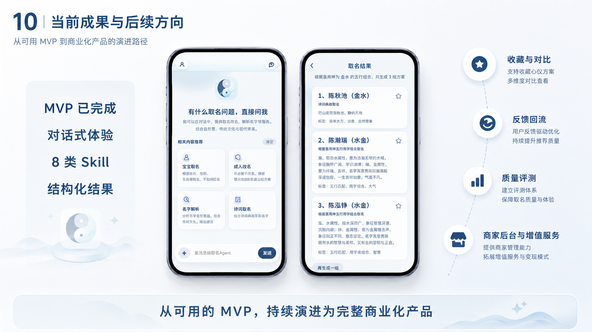
10 / 当前成果与后续方向
当前 MVP 已完成：
后续重点包括：
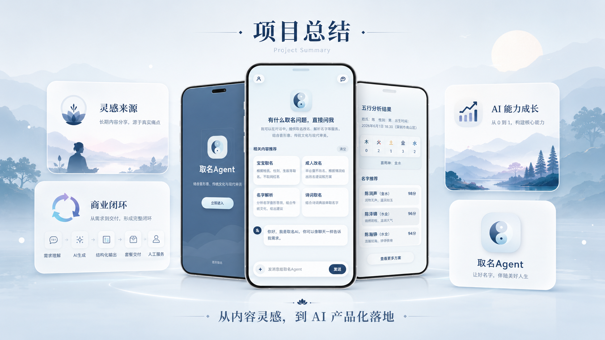
项目总结
取名Agent 是我的第一个 AI 产品项目，灵感来源于我在小红书进行取名内容分享时，对用户需求和交付痛点的观察。
通过这个项目，我将内容经验、名字库、五行属性字库、场景化 Skill 与大模型能力结合起来，完成了从需求识别、结果生成到套餐交付和人工服务承接的产品闭环，也验证了 AI 在低客单价服务自动化中的商业价值。
对我个人而言，这个项目不仅是一次产品落地实践，也帮助我系统建立了对 AI 产品设计的理解，包括数据清洗、知识结构化、Prompt 与 Skill 设计、模型调用、规则校验和结果评测等能力，为后续深入探索垂直场景 AI 产品打下了基础。